This report translates the five required JACO service regions into a concise strategy view of youth reach, school density, need concentration, outreach performance, and anchor feasibility.
The analysis answers six planning questions for JACO: how to group counties around anchor counties, which clusters maximize youth reach, where the school inventory is deepest, where high-need schools are concentrated, what the cold-call tracker says about outreach traction, whether the anchor model looks feasible on a one-hour proxy, and how to turn all of that into a practical priority order.
Data sources used: county population data from JACO.csv, Ohio school inventory from the NCES file, ZIP-to-tract mapping from ZIP_TRACT_122025.xlsx, high-need school data from the FY25 SSI workbook, and school outreach activity from the JA cold-call tracker.
YEAR code in the source and youth AGEGRP values 2, 3, 4.Outcome = Interested.High-need match summary: unmatched: 3031, exact_irn: 338, exact_unique_name: 140, normalized_name: 4. Tracker match summary: normalized_name_county: 58, unmatched: 4, normalized_name_unique: 2.
Limitations: the NCES extract does not provide usable school coordinates, so the school-point map uses approximate county-centroid placement rather than true school locations. Tracker rows were assigned to JACO regions at a 95.3% rate, and rows outside the grouped counties remain visible as unmatched limitations rather than being forced into a school-level view.
Positive outreach schools are defined as tracker rows where Outcome = Interested. The audit below shows all observed normalized outcome values, their counts, and which value is treated as positive.
| outcome_clean | count | is_positive |
|---|---|---|
| voicemail | 35 | False |
| call back | 9 | False |
| no answer | 7 | False |
| interested | 6 | True |
| not interested | 6 | False |
| (blank) | 1 | False |
| field | value | included_as_positive | rule |
|---|---|---|---|
| Outcome | voicemail | False | positive_response = outcome_clean == 'interested' |
| Outcome | call back | False | positive_response = outcome_clean == 'interested' |
| Outcome | no answer | False | positive_response = outcome_clean == 'interested' |
| Outcome | interested | True | positive_response = outcome_clean == 'interested' |
| Outcome | not interested | False | positive_response = outcome_clean == 'interested' |
| Outcome | (blank) | False | positive_response = outcome_clean == 'interested' |
This map shows the five fixed county clusters and their anchor counties. It defines the service geography used throughout the rest of the analysis.
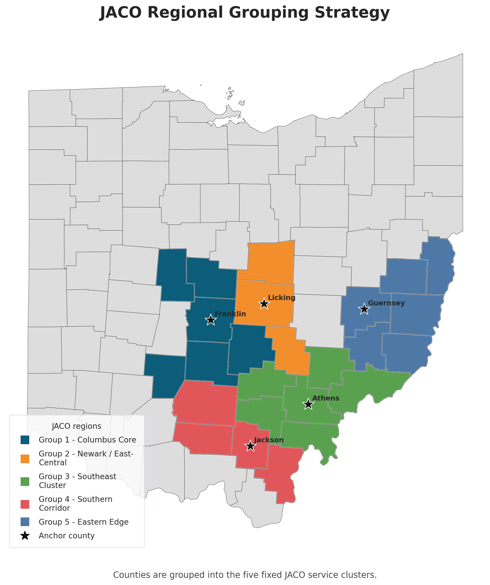
Each county is assigned to one of the five required JACO regions, and stars identify the anchor counties. This is the operating footprint for mobile-unit planning.
Limitations. The regions are fixed to the five required JACO groupings rather than optimized algorithmically from drive-time data.
These figures show where the largest youth and total population bases sit. Together they identify which regions maximize potential mobile-unit reach.
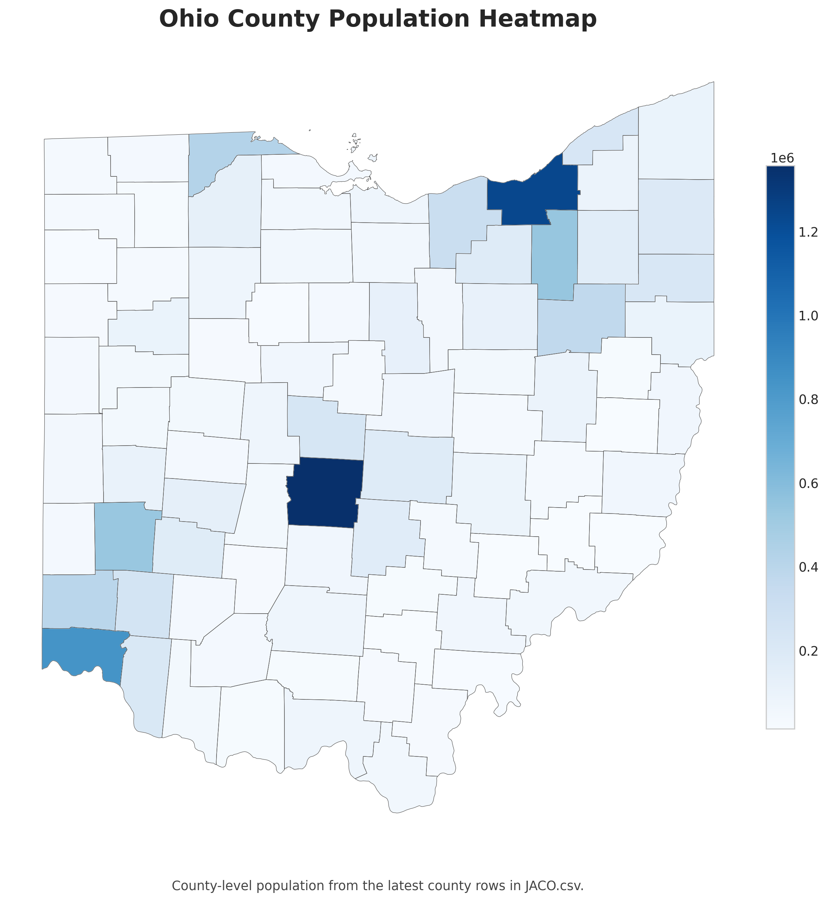
This county choropleth shows the statewide population pattern and provides context for where the JACO counties sit inside Ohio.
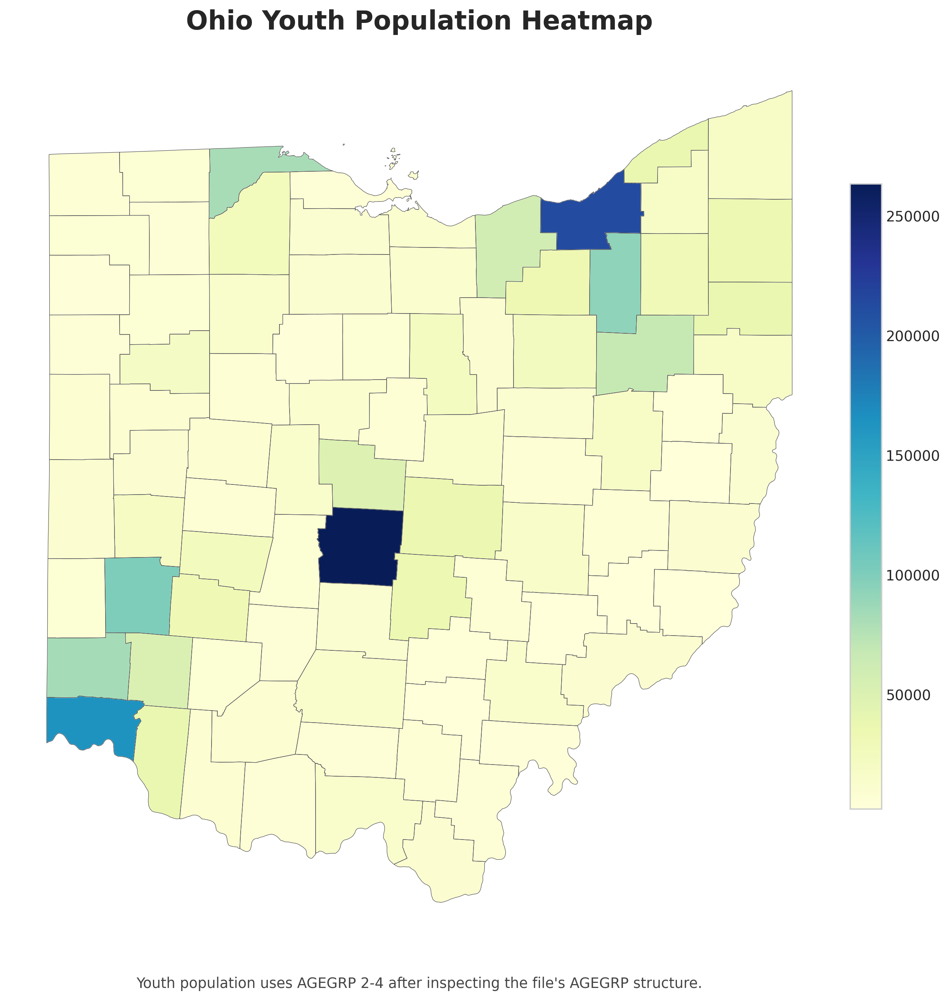
Youth population uses AGEGRP 2-4, corresponding to ages 5-19 in the source layout. This is the clearest county-level view of potential student reach.
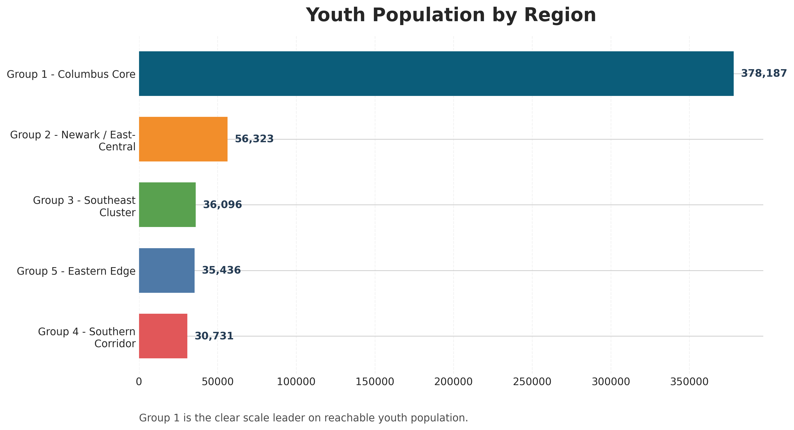
Group 1 is much larger than the rest of the portfolio on youth reach, making it the strongest first market if broad exposure is the priority.
Limitations. Population estimates rely on the latest YEAR code present in the source file and the AGEGRP structure available there, rather than a labeled calendar year field.
School inventory matters because the mobile-unit strategy also depends on partnership targets. Positive outreach schools are defined as tracker rows where Outcome = Interested, and 6 matched positive schools are highlighted on the map below.
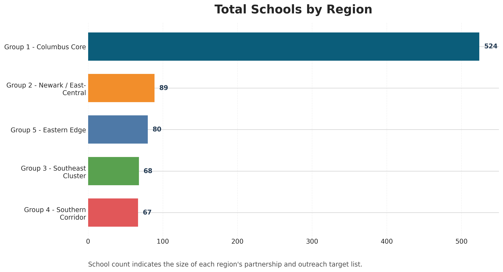
The Columbus Core dominates school count, which matters for both outreach capacity and partnership depth.
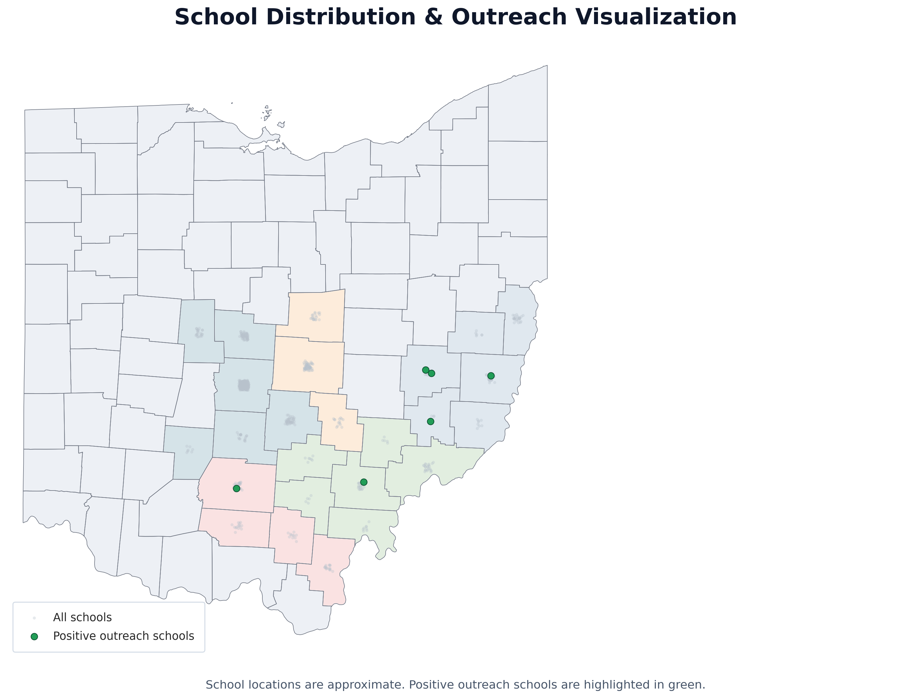
School locations are approximate. All schools are shown in light gray, and positive-response schools are highlighted in green.
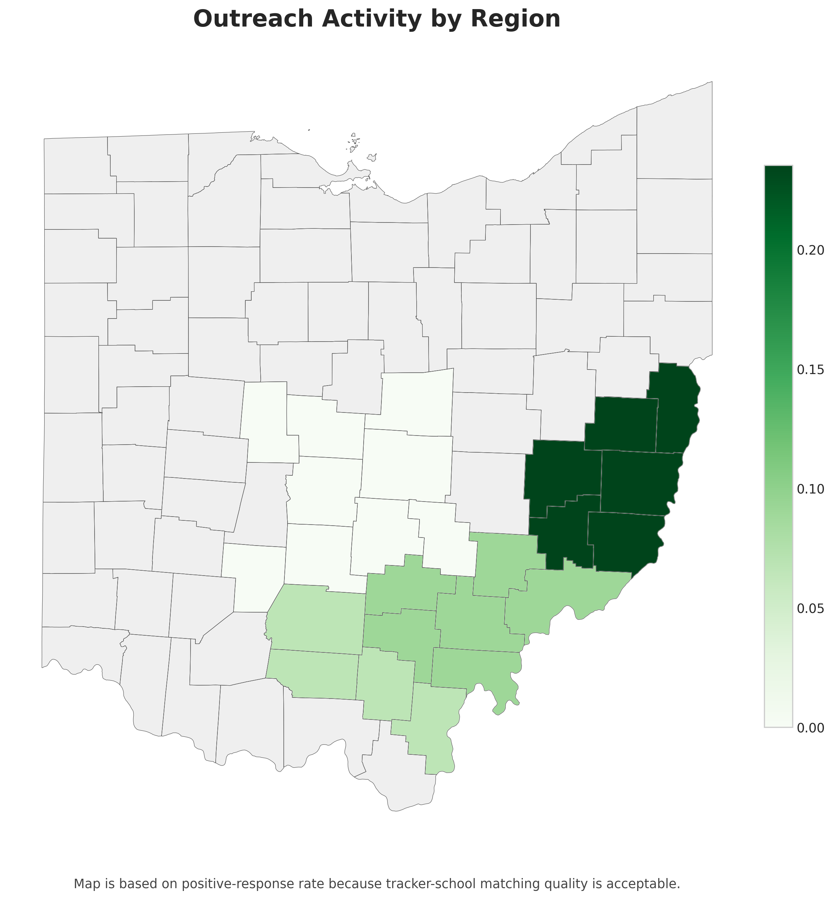
Positive outreach schools are defined as tracker rows where Outcome = Interested. The region map summarizes 6 positive tracker rows and 6 matched positive schools.
| region | anchor_county | total_schools | outreach_records | positive_responses | school_match_rate_within_region |
|---|---|---|---|---|---|
| Group 1 - Columbus Core | Franklin | 524 | 14 | 0 | 100.0% |
| Group 2 - Newark / East-Central | Licking | 89 | 4 | 0 | 75.0% |
| Group 3 - Southeast Cluster | Athens | 68 | 11 | 1 | 100.0% |
| Group 4 - Southern Corridor | Jackson | 67 | 15 | 1 | 100.0% |
| Group 5 - Eastern Edge | Guernsey | 80 | 17 | 4 | 100.0% |
Limitations. Because the NCES file does not include usable latitude/longitude fields, the school map uses approximate county-centroid placement with deterministic jitter instead of true school coordinates. Outreach highlighting depends on school-name matching from the tracker and therefore reflects matched Interested rows only.
This section checks whether each anchor county appears to cover its assigned counties within a reasonable one-hour proxy. Because no drive-time API is used, the test relies on centroid-to-centroid distance and should be read as a planning screen rather than a route model.
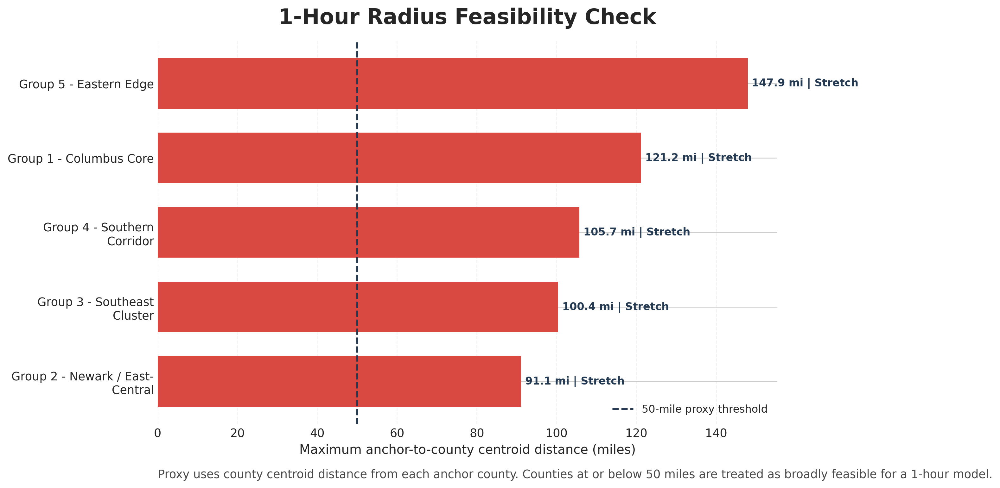
Each bar shows the farthest county-centroid distance from the anchor county inside that region. Regions entirely below the 50-mile proxy threshold appear more feasible for a one-hour anchor model.
| region | anchor_county | max_anchor_distance_miles | avg_anchor_distance_miles | counties_outside_proxy_radius | feasible_1hr_proxy |
|---|---|---|---|---|---|
| Group 1 - Columbus Core | Franklin | 121.2 | 74.233333 | 5 | False |
| Group 2 - Newark / East-Central | Licking | 91.1 | 53.800000 | 2 | False |
| Group 3 - Southeast Cluster | Athens | 100.4 | 65.833333 | 5 | False |
| Group 4 - Southern Corridor | Jackson | 105.7 | 63.775000 | 3 | False |
| Group 5 - Eastern Edge | Guernsey | 147.9 | 82.166667 | 5 | False |
Limitations. The feasibility screen uses centroid distance rather than true road-network travel time, so it is best treated as a transparent proxy rather than a definitive operating test.
The FY25 SSI workbook highlights a subset of high-need schools. These charts show where that need is most concentrated across the five required regions.
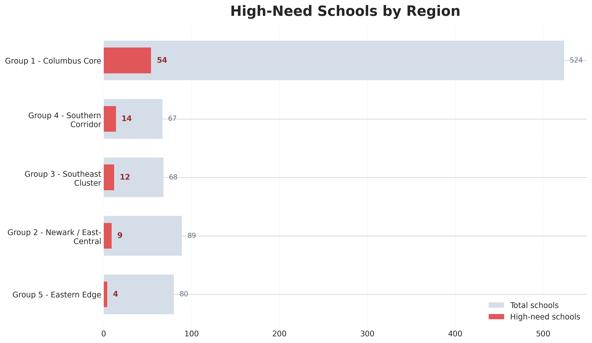
This compares total schools against the number of high-need schools identified through the SSI building allocation file.
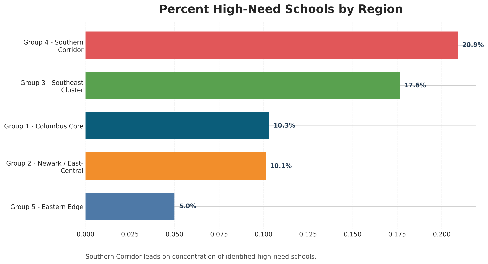
The share view controls for size and makes Southern Corridor stand out most clearly on concentration of identified need.
| region | anchor_county | counties_in_region | youth_population | total_schools | high_need_schools | high_need_share | priority_label |
|---|---|---|---|---|---|---|---|
| Group 1 - Columbus Core | Franklin | Delaware, Fairfield, Fayette, Franklin, Pickaway, Union | 378,187 | 524 | 54 | 10.3% | Scale + need |
| Group 2 - Newark / East-Central | Licking | Knox, Licking, Perry | 56,323 | 89 | 9 | 10.1% | Selective build |
| Group 3 - Southeast Cluster | Athens | Athens, Hocking, Meigs, Morgan, Vinton, Washington | 36,096 | 68 | 12 | 17.6% | Selective build |
| Group 4 - Southern Corridor | Jackson | Gallia, Jackson, Pike, Ross | 30,731 | 67 | 14 | 20.9% | Need leader |
| Group 5 - Eastern Edge | Guernsey | Belmont, Guernsey, Harrison, Jefferson, Monroe, Noble | 35,436 | 80 | 4 | 5.0% | Selective build |
Limitations. High-need results come from the FY25 SSI building allocation file and currently match only a subset of Ohio schools, so the need analysis should be treated as directional rather than exhaustive.
The final tradeoff chart positions each region by scale and need at the same time. It is the clearest bridge from descriptive analysis to planning recommendation.
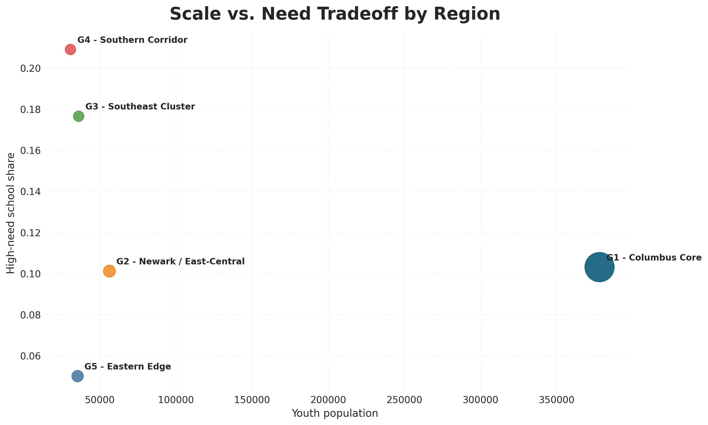
Bubble size represents total schools, the x-axis captures youth reach, and the y-axis captures high-need concentration.
Limitations. The tradeoff view combines the available reach and high-need measures, but it does not yet model travel time, staffing constraints, or partnership conversion rates.
Start with Group 1 - Columbus Core as the flagship region because it leads both on reachable youth and school inventory. Pair that with a focused second-wave strategy in Group 4 - Southern Corridor to concentrate on high-need school partnerships. For near-term outreach opportunity, Group 5 - Eastern Edge stands out on Interested-response rate. Feasibility proxy status: Group 1 - Columbus Core: stretch; Group 2 - Newark / East-Central: stretch; Group 3 - Southeast Cluster: stretch; Group 4 - Southern Corridor: stretch; Group 5 - Eastern Edge: stretch.
Report generated automatically by python run_pipeline.py.